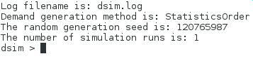

Tutorials
The first mandatory tutorial is the Getting Started procedure you should have already followed at this step. Once the needed AirSim packages are correctly installed, the following tutorials are what you need!
General knowledge
Whatever the flavour chosen, those tutorials will help. The only difference is the way to launch binaries. Let's take for instance the whole simulator component named DSim.
If you are working within the pre-configured Virtual Box, the command is independent from the current directory as the simulator libraries have been installed within the Fedora package:
or to run the installed version:
dsimIf you chose to work within the packaged metasim component (where all simulation modules are available), the correct way to launch the binary is:
cd ~/dev/metasimgit/workspace/build/dsim/dsim./dsimFinally, when dealing with all the modules independently, you can choose:
- to run the local binary version:
cd ~/dev/dsimgit/dsim
./simulate
cd ~/dev/deliverie/dsim-99.99.99/bin/After running the script, you can check that a log file, named after the script, has been created in the current directory and have a look at it:
./simulate
lsemacs simulate.log
Common commands for basic batches
From here, we choose to work in the directory where the needed binary is present. Please refer to the General knowledge part if you are not sure where to find the binaries.
- Display the help:
./simulate --help
- Run the scenario corresponding to a default built-in BOM tree:
./simulate --builtin
- Run the scenario corresponding to default input files:
./simulate
Common commands for interactive batches
In this part, we are working in the directory where the needed binary is present. Please refer to the General knowledge part part if you are not sure where to find the binaries.
The interactive scripts can be launched exactly as the non-interactive ones:
./dsimAt this step, you should see something similar to the following screen shot:
To display the help of the interactive scenario:
helpTo quit the interactive scenario:
quit